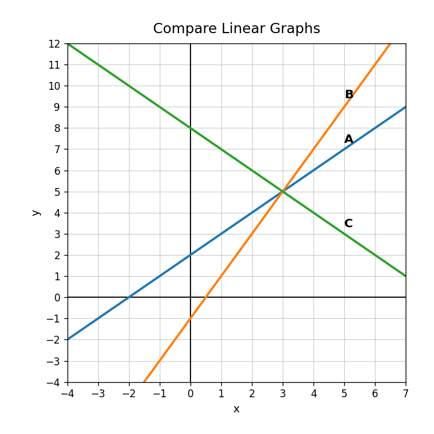

Practice Set 2.2.3
For $y=-3x+6$, identify the slope and $y$-intercept.
Use the graph. Compare the slopes and starting values of lines A, B, and C.

Explain how the slope and $y$-intercept of $y=4x+7$ tell you exactly how to draw the line.
Create a linear function whose graph is increasing, crosses the $y$-axis below the origin, and passes through $(2,3)$. Explain how your equation meets all three conditions.
Which pair of points could be used to find slope?
- $(1,4)$ and $(3,10)$
- $x=2$ and $y=7$
- rise and output
A car travels 120 miles in 2 hours. What is the average rate?
Use the graph. Find the rate of change.

Give an example of two points that form a horizontal line.
Find the slope through $(-3,4)$ and $(1,-8)$.
Find the constant rate of change and explain whether the relationship is linear.
| $x$ | 0 | 2 | 4 | 6 |
|---|---|---|---|---|
| $y$ | 1 | 7 | 13 | 19 |
Compare finding slope from a table and finding slope from two ordered pairs. What is the same in both methods?
A student creates a table that is supposed to have slope $4$, but the outputs are $3,7,12,15$ for inputs $0,1,2,3$. Revise one output so the table has constant rate of change $4$.
In $f(6)=19$, identify the input and the output.
Write a possible rule for the table.
| input | 1 | 2 | 3 | 4 |
|---|---|---|---|---|
| output | 5 | 8 | 11 | 14 |
A table has input 2 paired with outputs 5 and 9. Explain why this is a problem for being a function.
Create a function rule and a short context for it. Then evaluate your function at two inputs and explain the outputs.